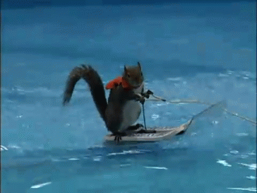

Mirando las estrellas me acordé de ti Y me pregunté si habrá alguien para mí Quizás en otra galaxia lejos de aquí No sé, no sé Dando vueltas por Marte a alguien conocí Y tuvimos un date en la luna Te juro que me gustaba hasta que pensé en usted, usted Y ya he viajado en el tiempo, he conocido el espacio Y no encuentro a nadie como tú Me besé con un alien, tuve sexo con marcianas Y nadie me gusta más que tú Yo seguiré buscando mil años luz Uh-uh Uh-uh Mirando las estrellas me acordé de ti Y me pregunté si habrá alguien para mí Quizás en otra galaxia lejos de aquí No sé, no sé, ey Uh-uh Uh-uh Uh-uh
Qué tenemos DJ, rapidamente Que comience la fiesta Mesa, mesa, mesa que más aplauda Mesa que más aplauda Mesa que más aplauda Le mando, le mando, le mando a la niña Mesa que más aplauda, sí Mesa que más aplauda, no Mesa que más aplauda Le mando, le mando, le mando a la niña Za, za, za, ya cuza, ya cuza Za, za, za, ya cuza, ya cuza Za, za, za, ya cuza, ya cuza Za, za, za, ya cuza, ya cuza Tú me aplaudes (za, za) Que tú me aplaudes (za, za, za) Tú me aplaudes (za, za) Que tú me aplaudes (za, za, za) Za, za, za, ya cuza, ya cuza Za, za, za, ya cuza, ya cuza Za, za, za, ya cuza, ya cuza Za, za, za, ya cuza, ya cuza Tú me aplaudes (za, za) Que tú me aplaudes (za, za, za) Tú me aplaudes (za, za) Que tú me aplaudes (za, za, za) Mesa que más aplauda, sí Mesa que más aplauda, no Mesa que más aplauda Le mando, le mando, le mando a la niña Mesa que más aplauda, sí Mesa que más aplauda, no Mesa que más aplauda Le mando, le mando, le mando a la niña Za, za, za, ya cuza, ya cuza Za, za, za, ya cuza, ya cuza Za, za, za, ya cuza, ya cuza Za, za, za, ya cuza, ya cuza Y los doctores (za, za) Y los ingenieros (za, za) Y los licenciados (za, za) Y los arquitectos (za, za) Los contadores (za, za) Y los maestros (za, za, za) Za, za, za, ya cuza, ya cuza Y los albaniles (za, za) El obrero (za, za) El herrero (za, za) El carpintero (za, za) Y los choferes (za, za) Y todo el mundo (za, za, za) Za, za, za, ya cuza, ya cuza Y los malandros(za, za) Y los huevones (za, za) Los hijos de papi (za, za) Y los juniors (za, za) Y los fresas (za, za) Los que se roban el dinero a mamá y se lo gastan en Climax Za, za, za, ya cuza, ya cuza Za, za, za, ya cuza, ya cuza Za, za, za, ya cuza, ya cuza Za, za, za, ya cuza, ya cuza Tú me aplaudes (za, za) Que tú me aplaudes (za, za, za) Tú me aplaudes (za, za) Que tú me aplaudes (za, za, za) Za, za, za, ya cuza, ya cuza Mesa, mesa, mesa que más aplauda Mesa que más aplauda Mesa que más aplauda Le mando, le mando, le mando a la niña Mesa que más aplauda Mesa que más aplauda Mesa que más aplauda Le mando, le mando, le mando a la niña Za, za, za, ya cuza, ya cuza Los de rio medio (za, za) Buenavista (za, za) Maniobrista (za, za) Quinta y tapa (za, za) Melano del perro (za, za) La 21 (za, za) La Cuahutemoc (za, za) Colonia Centro (za, za) Zaragoza (za, za) La Huaca (za, za) Costa de oro (za, za) Costa verde (za, za) El Virginia (za, za) El Reforma (za, za) Mocambo (za, za) Boca del río (za, za) El Manantial (za, za) La Carranza (za, za) Y todo el mundo (za, za, za) Za, za, za, ya cuza, ya cuza Y los de Tabasco (za, za) Los poblanos (za, za) Los chilangos (za, za) De Durango (za, za) De Sonora (za, za) Sinaloa (za, za) Y todo el mundo (za, za, za) Za, za, za, ya cuza, ya cuza Y los de Acapulco (za, za) Guadalajara (za, za) Guanajuato (za, za) Nuevo León (za, za) Tijuana (za, za) Reynosa (za, za) Y los de Tepito Za, za, za, ya cuza, ya cuza Los de Jalapa (za, za) Orizaba (za, za) Los de Cordoba (za, za) Costa Rica (za, za) Minatitlan (za, za) Coatzacualcos (za, za) Ciudad Mendoza (za, za) Alvarado (za, za) Ciudad Cardel (za, za) Y los jarochos Za, za, za, ya cuza, ya cuza El Irapuato (za, za) El Monarcas (za, za) El Monterrey (za, za) El Necaxa (za, za) El Toluca (za, za) El Cruz Azul (za, za) Los Pumas (za, za) Las Chivas (za, za) El America... que chinge a su madre... ¡Arriba los tiburones! Za, za, za, ya cuza, ya cuza Que todo el mundo aplauda Que todo el mundo aplauda Que todo el mundo aplauda Le mando, le mando, le mando, le mando a la niña Mesa que más aplauda Mesa que más aplauda Mesa que más aplauda Le mando, le mando, le mando a la niña Mesa que más aplauda Mesa que más aplauda Mesa que más aplauda Le mando, le mando, le mando a la niña...
